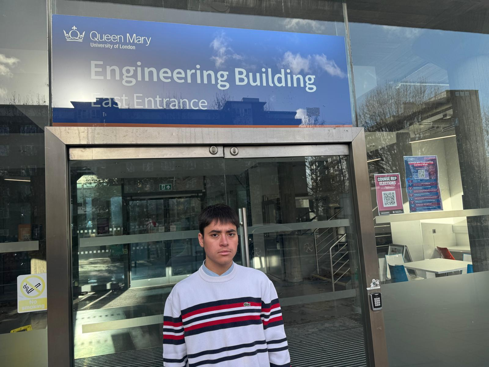

About Me

I am a Computer Science and Artificial Intelligence student at Queen Mary University of London with a strong interest in software engineering, artificial intelligence, and web development. Through academic and personal projects, I have developed skills in programming, problem-solving, teamwork, and communication. I enjoy building practical software solutions and continuously expanding my knowledge of modern technologies. I am particularly interested in artificial intelligence, machine learning, and full-stack development, and I am always looking for opportunities to apply my technical skills to real-world challenges.
Latest Updates
- Created the main portfolio pages, including Home, Education, Skills, Portfolio, Login, and Blog Entry pages.
- Added a consistent navigation menu to connect all pages across the website.
- Used HTML5 semantic elements such as header, nav, main, article, section, figure, figcaption, aside, and footer.
- Created login and blog entry forms using HTML5 form elements.
- Applied external CSS styling to improve layout, readability, and visual consistency.
- Started using Flexbox and CSS Grid to organise page layouts and content sections.